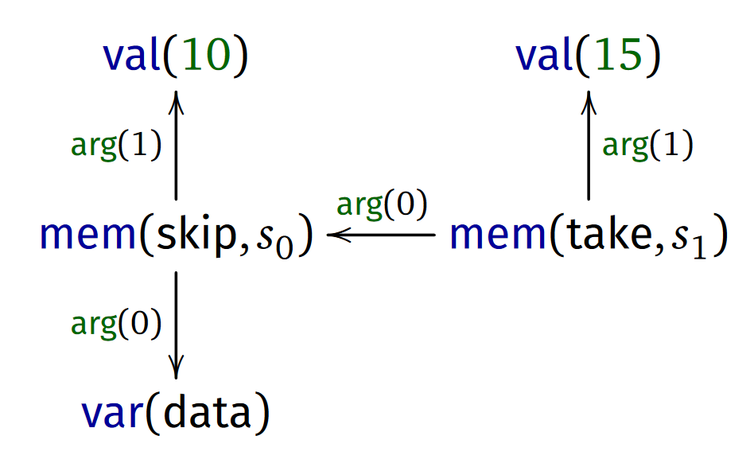

Full name: index.x
Foundations of a live
data exploration environment
Tomas Petricek, University of Kent
tomas@tomasp.net |
@tomaspetricek
Foundations of a live
data exploration environment
How the heck do data scientists
code and why we should care
Tomas Petricek, University of Kent
tomas@tomasp.net |
@tomaspetricek
Demo
Comparing air and rail travel in EU

Financial Times waste analysis
Note the clever abstraction mechanism!

Financial Times waste analysis
Note the clever abstraction mechanism!
Data scripting
Programs but not as we know them
Most work done in external libraries!
Limited need for top-level abstraction
Functions only as arguments to operations
Rapid feedback matters more than safety
Data exploration calculus
The essence of data exploration scripts
\[\definecolor{kvdclr}{rgb}{0.0,0.0,0.6} \newcommand{\kvd}[1]{\textcolor{kvdclr}{#1}} \newcommand{\lsep}{\;\;|\;\;} % \begin{equation*} \begin{array}{rlcl} \text{(programs)} && p &::=& c_1; \ldots; c_n\\ \text{(commands)} && c &::=& \kvd{let}~x = t \lsep t\\ \text{(terms)} && t &::=& o \lsep x \lsep t.m(e, \ldots, e)\\ \text{(expressions)} && e &::=& t \lsep \lambda x\rightarrow e\\ \text{(values)} && v &::=& o \lsep \lambda x\rightarrow e\\ \end{array} \end{equation*}\]
Demo
Exploring data in The Gamma project
Script evaluation
Call-by-value evaluation of variables
\[o_1;\; \ldots;\; o_{k};\; \kvd{let}~x=o;\; c_{1};\; \ldots; c_n \rightsquigarrow\\ \qquad o_1;\; \ldots;\; o_{k};\; o; c_{1}[x\leftarrow o];\; \ldots; c_n[x\leftarrow o]\]
Method evaluation specified externally
\[\dfrac {o.m(v_1, \ldots, v_n) \rightsquigarrow_\epsilon o'} {C_p[o.m(v_1, \ldots, v_n)] \rightsquigarrow C_p[o']}\]
External library
Adding lists with map operation
\[\dfrac {e[x \leftarrow n_i] \rightsquigarrow o_i \quad (\textit{for all $i\in 1\ldots k$})} {[ n_1, \ldots, n_k ].\text{map}(\lambda x\rightarrow e) \rightsquigarrow_\epsilon [ o_1, \ldots, o_k ]}\]
\[\dfrac {(\textit{otherwise})} {[ n_1, \ldots, n_k ].\text{map}(v_1, \ldots, v_n) \rightsquigarrow_\epsilon \bot}\]
Demo
Live previews in The Gamma system
Live previews
Maintaining a dependency graph

1: 2: |
|
The user edits the source code to change value of x
Live previews
Maintaining a dependency graph

1: 2: |
|
Graph node representing the value 10 gets reused!
Live previews
Efficient caching & evaluation of previews
Re-construct dependency graph after parsing
Cache nodes by their type and dependencies
Associate evaluated previews with nodes
Define evaluation over the graph structure
Demo
Performance of efficient live previews
Performance evaluation
Delays per token edit in a case study

Thank you!
Programs but not as we know them
Data exploration calculus as foundation
Efficient live previews using dependency graph
Tomas Petricek, University of Kent
tomas@tomasp.net |
@tomaspetricek